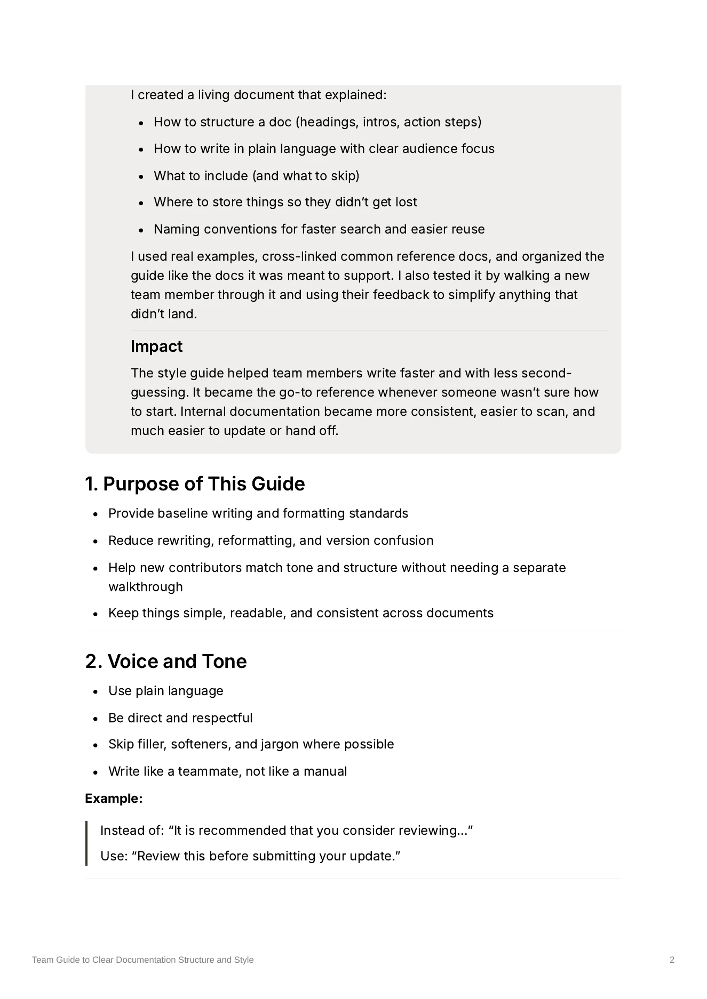

Internal Documentation · Content Design · Knowledge Management
Team Guide to Clear Documentation Structure and Style
A lightweight style guide that gave a team shared standards for writing, structuring, storing, and maintaining internal documentation.
The problem
Documentation lived across multiple platforms and was written by people with different habits, writing styles, and levels of experience.
The information existed, but contributors had to make the same decisions about structure, formatting, tone, and organization every time they created something new.
The audience
Team members who created or maintained internal documentation, including people who didn't consider documentation a primary part of their job.
What I did
I created a living guide that established shared conventions for document structure, plain-language writing, formatting, storage, and naming.
I organized the guide using the same standards it recommended and tested it by walking a new team member through it. Their feedback helped me simplify anything that wasn't immediately clear.
The solution
The guide establishes standards for:
- Voice and tone
- Headings, lists, and text formatting
- A standard structure for internal documents
- Naming and organization
- Version control
- Document ownership and updates
The finished documentation
The finished guide gives contributors a practical reference they can use while writing instead of requiring a separate walkthrough every time someone creates or updates a document.

The result
The guide gave contributors a shared starting point, reduced second-guessing, and made internal documentation more consistent and easier to scan, update, and hand off.
Skills demonstrated
- Technical writing
- Content design
- Style guide development
- Information architecture
- Plain-language writing
- Knowledge management
- User testing
- Documentation governance